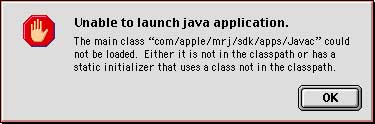

Legacy Document
Important: This document is part of the Legacy section of the ADC Reference Library. This information should not be used for new development.
Current information on this Reference Library topic can be found here:
ADC Home > Reference Library > Technical Q&As > Legacy Documents > Java >
Important: This document is part of the Legacy section of the ADC Reference Library. This information should not be used for new development.
Current information on this Reference Library topic can be found here:
|
|
Q: When I try to use tools from the MRJ SDK 2.2, I cannot get them to run because it thinks I don't have the right classes installed. What's the problem? This used to work just fine under MRJ 2.1.4 and earlier. A: You are most likely seeing a either a dialog similar to this:  or a message in the console similar to this:
The dialog is a result of not having the "MRJSDKClasses.zip" in your MRJClasses folder and MRJ cannot locate the main class from which to launch the tool. The console stack trace message is a result of not having the "JDKToolsClasses.zip" in your MRJClasses folder, and MRJ cannot locate the underlying support classes for the tool. In order to make the MRJ installation more streamlined in MRJ 2.2, the most commonly used classes are installed automatically, while some of the more abstract, or developer-level, classes have been separated out into additional zip files. The "MRJSDK:Extensions" folder contains Java classes you may need at runtime. MRJ does not use these classes for normal applications and applets. They include "MRJSDKClasses.zip", "JDKToolsClasses.zip", and "JDKI18nClasses.zip." MRJSDKClasses.zip JDKToolsClasses.zip JDKI18nClasses.zip Earlier versions of the MRJ SDK 2.1 Installer installed two files which are no longer needed. If they still exist on your system, you need to remove them manually. They include:
The MRJ SDK 2.2 installer will automatically place the "MRJSDKClasses.zip" and "JDKToolsClasses.zip" in the MRJClasses folder of the active System folder. [Feb 02 2000] |
|